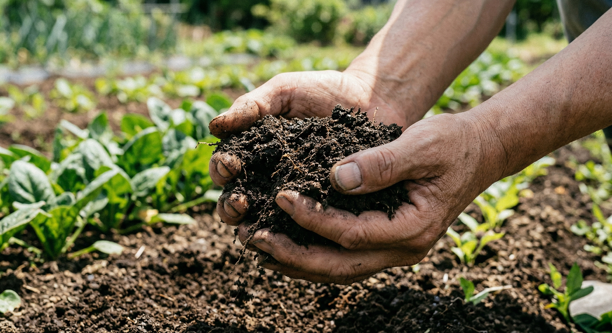

Scroll
Japan's Alcohol Platform
日本の酒文化を、一つの場所に。
Terroir（テロワール）とは、フランス語で「土地」を意味する言葉。同じ米でも、水が違えば味が変わる。気候が違えば、熟成が変わる。その場所でしか生まれない味わいを、テロワールと呼びます。
新潟の雪解け水で仕込む日本酒、鹿児島のシラス台地が育む芋焼酎、北海道の冷涼な空気が磨くウイスキー。すべての蔵元・蒸留所には、その土地だけのテロワールがあります。
Terroir HUBは、その一つ一つを集めた場所（HUB）です。

全国の2,805の生産者（日本酒1,751蔵・焼酎389蒸留所・ウイスキー67蒸留所・リキュール125社・日本ワイン473ワイナリー）と、伝統工芸品245品目の公式情報を掲載したデータベース。口コミやレビューではなく、蔵元・蒸留所が自ら発信する情報をもとにしています。
ジャンルごとの専用サイトから、都道府県・産地別に蔵元や蒸留所を探せます。
カテゴリ
Sake
全国1,751蔵の公式情報データベース。47都道府県の蔵元を掲載。

Shochu & Awamori
芋・麦・米・黒糖、そして沖縄の泡盛。原料や産地から蒸留所を探せます。

Whisky
山崎からクラフト新鋭まで。ジャパニーズウイスキーの蒸留所67か所を掲載。

Liqueur
梅酒、ゆず酒、抹茶、桃 — 日本のクラフトリキュールとフルーツ酒の世界。

Wine
全国473ワイナリーの公式データベース。甲州から北海道まで、日本ワインの造り手を掲載。

Craft
九谷焼・輪島塗・西陣織など、全国245品目の伝統工芸品を掲載。産地・技法・体験情報を案内。
Why Terroir HUB
日本酒・焼酎・ウイスキー・リキュール・ワイン・伝統工芸を一つのサイトから — 蔵元・蒸留所の公式情報をもとにしたデータベースです。
蔵元・蒸留所が公開している公式情報を丁寧に収集・構造化。口コミや二次情報ではなく、作り手自身の言葉をそのまま届けます。
ポータルサイトは日本語・英語・フランス語で表示を切り替えられます。
日本酒、焼酎、ウイスキー、リキュール、ワイン、伝統工芸 — 6ジャンルをひとつの入口から探せます。
ジャンルごとに専用サイトを用意し、蔵・蒸留所・ワイナリー・品目ごとの詳細ページを掲載しています。
地域・都道府県から蔵元や蒸留所を探せます。旅行計画にも最適。訪問できる蔵も見つかります。
すべての蔵元・蒸留所データは無料で閲覧可能。アカウント登録なしで、すぐに使えます。